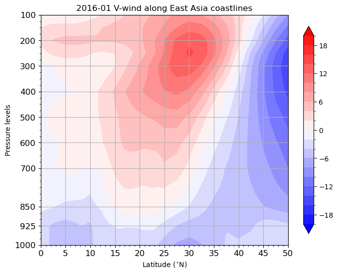

Slicing Iregular Grids#
Acknowledgement: The material was provided by Mrs. Kuan-Yun Wang, UC Davis.
非直線的剖面 (cross-section) 繪製#
本節學習如何使用xarray繪製「不是沿著相同經緯線」的cross section，這裡提供的範例是繪製渤海、黃海、東海到南海這個曲折線段上的 \(V\) 風垂直剖面。
首先引入需要的packages，以及讀取2016年1月份的V-wind資料，並取1月份平均。
import numpy as np
import xarray as xr
import matplotlib.pyplot as plt
import cartopy.crs as ccrs
import cmaps
v = xr.open_dataset('data/vwnd.2016.nc').vwnd
v_jan = v.sel(time=(v.time.dt.month.isin([1]))).mean('time')
接下來讀取渤海、黃海、東海到南海這個曲折線段的經緯度，並選擇要繪製的經緯度範圍 (以文字檔儲存，其中第一欄為經度，第二欄為緯度)。
y_pos, x_pos= np.loadtxt('sellatlon_EA.txt', dtype=float, unpack=True)
x_pos = x_pos[y_pos <= 50]
y_pos = y_pos[y_pos <= 50]
x_pos = x_pos[y_pos >= 0]
y_pos = y_pos[y_pos >= 0]
---------------------------------------------------------------------------
FileNotFoundError Traceback (most recent call last)
Cell In[2], line 1
----> 1 y_pos, x_pos= np.loadtxt('sellatlon_EA.txt', dtype=float, unpack=True)
2 x_pos = x_pos[y_pos <= 50]
3 y_pos = y_pos[y_pos <= 50]
File /data/wtsai/micromamba/p3/lib/python3.10/site-packages/numpy/lib/npyio.py:1373, in loadtxt(fname, dtype, comments, delimiter, converters, skiprows, usecols, unpack, ndmin, encoding, max_rows, quotechar, like)
1370 if isinstance(delimiter, bytes):
1371 delimiter = delimiter.decode('latin1')
-> 1373 arr = _read(fname, dtype=dtype, comment=comment, delimiter=delimiter,
1374 converters=converters, skiplines=skiprows, usecols=usecols,
1375 unpack=unpack, ndmin=ndmin, encoding=encoding,
1376 max_rows=max_rows, quote=quotechar)
1378 return arr
File /data/wtsai/micromamba/p3/lib/python3.10/site-packages/numpy/lib/npyio.py:992, in _read(fname, delimiter, comment, quote, imaginary_unit, usecols, skiplines, max_rows, converters, ndmin, unpack, dtype, encoding)
990 fname = os.fspath(fname)
991 if isinstance(fname, str):
--> 992 fh = np.lib._datasource.open(fname, 'rt', encoding=encoding)
993 if encoding is None:
994 encoding = getattr(fh, 'encoding', 'latin1')
File /data/wtsai/micromamba/p3/lib/python3.10/site-packages/numpy/lib/_datasource.py:193, in open(path, mode, destpath, encoding, newline)
156 """
157 Open `path` with `mode` and return the file object.
158
(...)
189
190 """
192 ds = DataSource(destpath)
--> 193 return ds.open(path, mode, encoding=encoding, newline=newline)
File /data/wtsai/micromamba/p3/lib/python3.10/site-packages/numpy/lib/_datasource.py:533, in DataSource.open(self, path, mode, encoding, newline)
530 return _file_openers[ext](found, mode=mode,
531 encoding=encoding, newline=newline)
532 else:
--> 533 raise FileNotFoundError(f"{path} not found.")
FileNotFoundError: sellatlon_EA.txt not found.
為x_pos、y_pos建立新的DataArray，並設定擁有相同的dimension。接著，使用xr.interp函數對 \(V\) 風場資料內插到所選的經緯度(x_pos, y_pos)上。
da_lons = xr.DataArray(x_pos, dims='lat')
da_lats = xr.DataArray(y_pos, dims='lat')
v_cro = v_jan.interp(lat=da_lats, lon=da_lons)
v_cro
<xarray.DataArray 'vwnd' (level: 17, lat: 500)>
array([[-3.68268522, -3.66213074, -3.64047876, ..., -3.11352991,
-3.05033255, -2.98713519],
[-3.64299498, -3.61555066, -3.58706748, ..., -3.33184726,
-3.2842215 , -3.23659573],
[-7.25529253, -7.23878454, -7.22188098, ..., -1.58555811,
-1.56942647, -1.55329484],
...,
[ 4.52398556, 4.62559524, 4.72667311, ..., 0.30175616,
0.31368649, 0.32561683],
[11.18332733, 11.25741096, 11.33039131, ..., -0.15216129,
-0.15066706, -0.14917283],
[20.89200851, 20.86511519, 20.83686176, ..., 1.41306749,
1.41367915, 1.41429081]])
Coordinates:
* level (level) float32 1e+03 925.0 850.0 700.0 ... 50.0 30.0 20.0 10.0
* lat (lat) float64 50.0 49.9 49.8 49.7 49.6 49.5 ... 0.5 0.4 0.3 0.2 0.1
lon (lat) float64 114.4 114.5 114.6 114.6 ... 108.0 108.0 108.0 108.0v_cro的維度是 \(N_{\text{lat}} \times N_{\text{level}}\) ；另外精度位置是lat緯度的函數。
最後就是用xarray.plot.contourf作圖，結果如下：
fig, ax = plt.subplots(nrows = 1, ncols = 1, figsize = (8,6))
v_plot = v_cro.plot.contourf(
x='lat', y='level', ylim=(1000, 100),
ax=ax,
levels = np.arange(-20, 22, 2),
cmap = cmaps.MPL_bwr, alpha = 1,
add_colorbar=True,
extend='both',
cbar_kwargs={'orientation': 'vertical', 'aspect': 20, 'shrink': 0.9, 'extend':'both', 'label': ''})
ax.set_xlim([0, 50])
ax.set_xticks(np.arange(0, 50+1,5))
ax.set_xticks(np.arange(0, 50+1,1), minor = True)
ax.set_yticks([1000, 925, 850, 700, 600, 500, 400, 300, 200, 100])
ax.set_yticks(np.arange(1000, 100, -25), minor = True)
ax.xaxis.set_tick_params(labelsize=12)
ax.yaxis.set_tick_params(labelsize=12)
ax.set_xlabel('Latitude ($^{\circ }$N)')
ax.set_ylabel('Pressure levels')
ax.set_title('')
ax.grid()
ax.set_title('2016-01 V-wind along East Asia coastlines')
plt.show()
